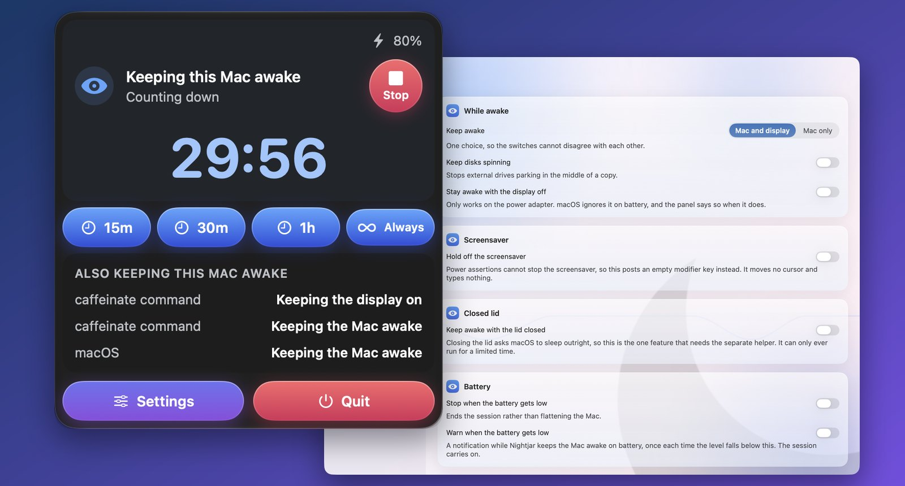
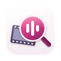

Nightjar
Håll din Mac vaken. Ärligt.
Visuell simulering. I Mac-appen förhindrar Nightjar verklig vila och skyddar batteriet från uttömning.

Vad den gör
Nightjar håller din Mac vaken från menyraden: ett reglage, en nedräkning bredvid, och allt annat ur vägen tills du vill ha det. Den är uppkallad efter fågeln som är uppe hela natten.
- Ett val, inte tre reglage. Håll Macen och skärmen vakna, håll bara Macen vaken och låt skärmen somna, eller inget alls.
- En nedräkning du faktiskt ser, i menyraden bredvid symbolen, med lika breda siffror så att inget hoppar. Den stannar på noll.
- Villkor som slår på den av sig själva: medan ett program körs, medan en extern skärm är ansluten, medan en volym är monterad, medan strömadaptern är ansluten eller medan batteriet ligger över en nivå du väljer.
- Den säger som det är. Att hålla vaken med skärmen avstängd fungerar bara med strömadaptern; på batteri godtar macOS begäran och struntar sedan i den, och Nightjar säger det i stället för att misslyckas i tysthet.
- Den visar vad mer som håller Macen vaken, process för process, med namn.
- Batteriregler, så att en session slutar innan den tömmer en bärbar dator, och en valfri notis när batteriet blir lågt medan Macen hålls vaken.
- Länkar och en kommandorad för Genvägar, Raycast, en webbläsare eller ett skript.
Kräver macOS 14 Sonoma eller senare. Finns på 34 språk.
Automatisering
Tre åtgärder är klara i appen Genvägar utan inställningar: håll vaken en stund eller utan gräns, sluta hålla vaken, och fråga om Nightjar håller Macen vaken. Siri och Spotlight känner också till dem. Varje kommando finns både som länk och på kommandoraden, så att Genvägar, Raycast, en webbläsare eller ett skript kan styra den:
nightjar://activate?minutes=30
nightjar://activate?until=17:30
nightjar://toggleProgrammet inuti appen tar samma argument och lämnar över dem till den kopia som körs:
"/Applications/Nightjar.app/Contents/MacOS/Nightjar" --activate --minutes=30Klassiska verktyg jämfört med Nightjar
Håll din Mac pålitligt vaken utan risk för oväntat tomt batteri.
| Aspekt | Klassiska verktyg | Nightjar |
|---|---|---|
| Ärlig status | Misslyckas tyst när företagsprofiler tvingar fram viloläge | Visar öppet när macOS åsidosätter kommandot att hålla datorn vaken |
| Stängt lock | Mac går omedelbart i vila när locket stängs och avbryter jobb | Säker hjälpreda låter nedladdningar och renderingar fortsätta med locket stängt |
| Batterisäkerhet | Tömmer MacBook-batteriet till 0% om du glömmer stänga av | Släpper automatiskt vaken-låset om batteriet sjunker under tröskelvärdet |
| Smarta regler | Endast manuell på- och avstängning med klick | Automatiska villkor: under nedladdning, på valt Wi-Fi eller när en app körs |
| Behörigheter | Kräver komplexa bakgrundsprocesser med root-behörighet | Standard macOS-systemanrop utan behov av administratörsrättigheter |
Integritet i ett stycke
Nightjar håller öppna de strömförfrågningar som macOS redan erbjuder. Den läser ingenting om dig, ansluter inte till något nätverk alls och har inget konto. Dina inställningar ligger i appens egen sandlådebehållare. Hela integritetspolicyn säger samma sak, mer utförligt.
Fler appar från samma utvecklare
Små appar som var och en gör en sak bra. Inga konton, ingen reklam, och ingen av dem spårar dig.
 StatuetteCPU, minne, disk och nätverk i menyraden.Mac
StatuetteCPU, minne, disk och nätverk i menyraden.Mac TocketteEn timer, ett drag från menyraden.Mac
TocketteEn timer, ett drag från menyraden.Mac ZonetteAlla tidszoner du bryr dig om, ett klick bort.MaciPhone och iPadAndroid
ZonetteAlla tidszoner du bryr dig om, ett klick bort.MaciPhone och iPadAndroid LunetteMånen och solen i en blick.MaciPhone och iPadAndroid
LunetteMånen och solen i en blick.MaciPhone och iPadAndroid LunaretteMånkalendern i fyra traditioner.MaciPhone och iPadAndroid
LunaretteMånkalendern i fyra traditioner.MaciPhone och iPadAndroid PausetteVarsamma pauser för ögonen och ryggen.Mac
PausetteVarsamma pauser för ögonen och ryggen.Mac PoisetteSitt rakt, påmind av AirPods du har på dig.MaciPhone och iPad
PoisetteSitt rakt, påmind av AirPods du har på dig.MaciPhone och iPad HushetteLugna bakgrundsljud som aldrig upprepas.MaciPhone och iPadAndroid
HushetteLugna bakgrundsljud som aldrig upprepas.MaciPhone och iPadAndroid TapsodyLjudet av ett mekaniskt tangentbord när du skriver.Mac
TapsodyLjudet av ett mekaniskt tangentbord när du skriver.Mac ThrumlineDin puls, live i menyraden.Mac
ThrumlineDin puls, live i menyraden.Mac UmbretteDämpa allt utom fönstret du arbetar i.Mac
UmbretteDämpa allt utom fönstret du arbetar i.Mac PrompetteEn teleprompter precis under kameran.MaciPhone och iPadAndroid
PrompetteEn teleprompter precis under kameran.MaciPhone och iPadAndroid TalletteEn pappersremsa för dina uträkningar.MaciPhone och iPadAndroid
TalletteEn pappersremsa för dina uträkningar.MaciPhone och iPadAndroid
ProbetteAllt tekniskt om en mediefil, i klartext.MaciPhone och iPadAndroid BindetteGör ljudfiler till en riktig ljudbok.MaciPhone och iPadAndroid
BindetteGör ljudfiler till en riktig ljudbok.MaciPhone och iPadAndroid LettretteÖppna winmail.dat- och .msg-filer så som de skickades.MaciPhone och iPad
LettretteÖppna winmail.dat- och .msg-filer så som de skickades.MaciPhone och iPad Nhanh TaySätt fyra svar i ordning. Snabbt.MaciPhone och iPadAndroid
Nhanh TaySätt fyra svar i ordning. Snabbt.MaciPhone och iPadAndroid PinetteAnteckningar du har inom synhåll.MaciPhone och iPadAndroid
PinetteAnteckningar du har inom synhåll.MaciPhone och iPadAndroid UsagetteClaudes användningsgränser i menyraden.Mac
UsagetteClaudes användningsgränser i menyraden.Mac SquiggoRita tillsammans med en vänlig kompis.MaciPhone och iPadAndroid
SquiggoRita tillsammans med en vänlig kompis.MaciPhone och iPadAndroid
ForemanJobb, offerter och fakturor för hantverkare.MaciPhone och iPadAndroid TilewakeEtt skjutpussel där bilderna vaknar.MaciPhone och iPadAndroid
TilewakeEtt skjutpussel där bilderna vaknar.MaciPhone och iPadAndroid Chăm luyệnÖvningar för vietnamesiska lågstadieelever, upplästa.MaciPhone och iPadAndroid
Chăm luyệnÖvningar för vietnamesiska lågstadieelever, upplästa.MaciPhone och iPadAndroid